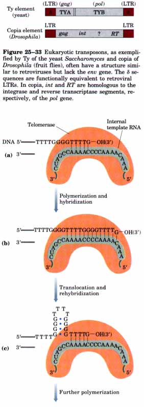
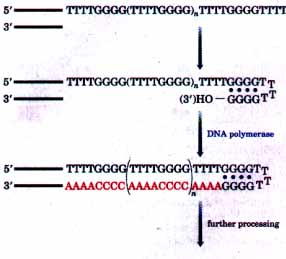
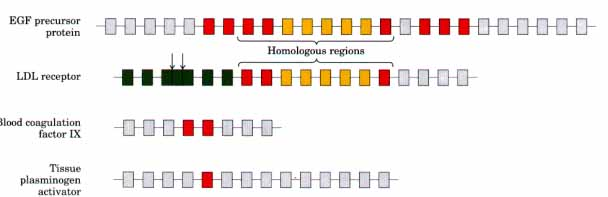
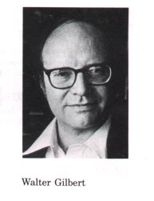

B O X 25-2Fighting AIDS with Inhibitors of HIV Reverse TranscriptaseA knowledge of the fundamental chemistry of template-directed nucleic acid biosynthesis, combined with modern techniques of molecular biology, has led to a rapid understanding of the life cycle and structure of the human immunodeficiency virus (HIV), the RNA virus that causes AIDS. Just a few years after the isolation of HIV, these advances also resulted in the development of drugs capable of prolonging the lives of those infected by HIV. The first of these drugs to be approved for clinical use was AZT (Fig. 1), a structural analog of deoxythymidine. AZT was first synthesized in 1964 by Jerome P. Horwitz. It failed as an anticancer drug (the purpose for which it was made), but in 1985 it was found to be an effective treatment for AIDS. AZT is taken up by the T lymphocytes, immune system cells that are particularly vulnerable to HIV infection, and converted to AZT triphosphate (AZT triphosphate cannot be given directly because it cannot cross the plasma membrane). The HIV reverse transcriptase has a higher affinity for AZT triphosphate than for dTTP; binding of AZT triphosphate to the enzyme competitively inhibits dTTP binding. In addition, AZT can be added to the 3' end of the growing RNA chain, but because AZT has no 3' hydroxyl the RNA chain is prematurely terminated and viral RNA synthesis quickly grinds to a halt.
|
Some well-characterized transposons from
eukaryotes as diverse as yeast and fruit flies have a
structure very similar to that of retroviruses and are
sometimes called retrotransposons (Fig. 25-33). They have
coding regions specifying an enzyme homologous to the
retroviral reverse transcriptase, and the coding regions
are flanked by LTR sequences. They transpose from one
position to another in the genome by means of an RNA
intermediate, probably using reverse transcriptase to
make a DNA copy of the RNA, followed by integration at a
new site. Most transposons in eukaryotes probably use
this mechanism for transposition, distinguishing them
from the bacterial transposons described in Chapter 24
that move as DNA directly from one chromosomal location
to another (see Fig. 24-40). Retrotransposons lack an enu
gene and so cannot form virus particles capable of
transferring among cells. They can be thought of as
defective viruses trapped in one cell. The relationship
between retroviruses and these eukaryotic transposons
suggests that reverse transcriptase is an ancient enzyme
that predates the evolution of multicellular organisms.Telomerase Is an Enzyme Resembling Reverse TranscriptaseTelomeres (Chapter 23) are the specialized structures at the ends of linear eukaryotic chromosomes. They generally consist of many tandem copies of a short oligonucleotide sequence, usually of the form TxGy in one strand and CyAx in the complementary strand, where x and y typically fall in the range of 1 to 4 (see p. 798). The structure of telomeres poses a particular biological problem. DNA replication requires a primer, but in a linear DNA molecule it is impossible to synthesize an RNA primer starting at the end nucleotide and replace it by the normal mechanisms. Without a special mechanism for replicating the ends, chromosomes would be shortened somewhat in each cell generation. The problem is solved by an enzyme called telomerase, which adds telomeres to chromosome ends. Although the existence of this enzyme may not be surprising, the mechanism by which it acts is unprecedented. Telomerase, like some other enzymes described in this chapter, contains both RNA and protein components. The RNA component is about 150 nucleotides long and contains about 1.5 copies of the appropriate CyAx telomere repeat. This part of the RNA acts as a template for synthesis of the TxGy strand of the telomere. In effect, telomerase is a reverse transcriptase that synthesizes only a segment of DNA that is complementary to an internal RNA template. |
 Figure 25-34 Synthesis of the TG strand of a telomere by telomerase: the "inchworm" model. (a) Telomerase binds to the TG primer, with base pairing between the primer and the enzyme's internal RNA template. (b) The enzyme adds more T and G residues to the primer, then (c) shifts to reposition the internal template for additian of more TG repeats. The newly synthesized telomere strand can form a hairpin structure by nonstandard base pairing between G residues. |
Telomere synthesis requires a short TxGy primer and proceeds in the usual 5'→3' direction. Having synthesized one copy of the repeat, the enzyme must be repositioned to resume extension of the telomere. This may occur in an inchworm-like process as outlined in Figure 25-34.
The mechanisms by which this process is terminated when a telomere of sufficient length has been synthesized, and how the complementary CA strand is synthesized, are not yet known. One feature of guanylaterich sequences, however, is that they are capable of folding back on themselves to form non-Watson-Crick G-G base pairs (Fig. 25-34). It is possible that the TG strand folds back on itself in this way near the end (Fig. 25-35), providing a primer for synthesis of the complementary strand.
| Loss of telomerase activity in protozoans (such as Tetrahymena) results in a gradual shortening of telomeres with each cell division, ultimately leading to the death of the cell line. In humans, a similar link between telomere length and cell death has been observed. In germ-line cells telomere lengths are maintained, but in somatic cells they are not. There is a linear, inverse relationship between the length of telomeres in cultured fibroblasts and the age of the individual from whom the fibroblasts were taken: telomeres in human somatic cells gradually shorten as an individual ages. One inference is that germline cells contain telomerase activity but somatic cells do not. Is this gradual shortening of telomeres a key to the aging process? Is our natural life span determined by the length of the telomeres we are born with? Further research in this area should yield some fascinating insights. |  Figure 25-35 Nonstandard G-G base pairing could permit the end of the telomere TG strand to fold over as shown, creating a primer for synthesis of the complementary strand (shown in red). |
Some E. coli bacteriophages, including f2, M52, R17, and Qβ, have RNA genomes. The single-stranded RNA chromosomes of these viruses, which also function as mRNAs for the synthesis of viral proteins, are replicated in the host cell by the action of enzymes called RNA-directed RNA polymerases or RNA replicases. RNA replicase (Mr ~ 210,000) has four subunits. Only one of these subunits (Mr 65,000), the product of the viral replicase gene, is encoded by the viral RNA; this subunit includes the active site for replication. The other three subunits are host proteins normally involved in protein synthesis: the elongation factors Tu (Mr 30,000) and Ts (Mr 45,000) of E. coli, which normally function in ferrying amino acyl-tRNAs to the ribosome, and the protein Sl, which is normally an integral part of the 30S ribosomal subunit. These host proteins may help the replicase locate and bind to the 3' ends of viral RNA.
RNA replicase isolated from Qβ-infected E. coli cells catalyzes the formation of an RNA complementary to the viral RNA in a reaction similar to that of DNA-directed RNA polymerases (see p. 857). Synthesis of the new RNA strand proceeds in the 5'→3' direction, and the chemical mechanism is identical to that for all other template-requiring nucleic acid synthetic reactions. RNA replicase requires RNA as template and will not function with DNA. The enzyme lacks a proof reading endonuclease, and the frequency of error is similar to that of RNA polymerase. Unlike the DNA and RNA polymerases, RNA replicases are specific for the RNA of their own virus; the RNAs of the host cell are generally not replicated. This explains how RNA viruses are preferentially replicated in the host cell, which contains many other types of RNA.
The extraordinary complexity and order that distinguish living systems from inanimate ones are only the outward manifestation of more fundamental processes that hold the key to understanding "life." Maintaining the living state requires that selected chemical transformations occur very rapidly-in particular those required to make efficient use of energy sources in the environment and to synthesize the elaborate and specialized macromolecules found in a cell. The crucial conditions for life, then, are the existence of powerful and very selective catalyststhe enzymes-and an informational system capable of storing a blueprint for these enzymes and reproducing them generation after generation. The cellular chromosomes do not encode the blueprint for a cell; they encode the structure of the enzymes needed to construct and maintain a cell. But how did this system come into being?
In the 1960s, the unveiling of the structural and functional complexity of RNA led Carl Woese, Francis Crick, and Leslie Orgel to propose that this macromolecule might have catalytic as well as informational functions in the cell. The discovery of catalytic RNAs has taken this remarkable insight from conjecture to reality. The presence of both of these important functions in one macromolecule suggests that self replicating RNA molecules might exist, or might once have existed; this has a number of important implications for evolution. It is now possible to speculate about two stages of biochemical evolution: an early stage in which RNA molecules first achieved a self replicating activity, and a later stage when proteins were evolving to their present form.
The existence of catalytic RNAs allows us to envision an early biological world made up entirely or almost entirely of RNA (see Fig. 3-22). Proteins became abundant later when their greater versatility as catalysts proved advantageous. This "RNA world" scenario has been made much more plausible by the discovery that the synthesis of the peptide bonds of proteins is catalyzed by the rRNA component of ribosomes. The first true cells may have contained only RNA, protein, and the smaller molecules needed to form a cell wall and provide metabolic energy. Later, DNA entered the picture to provide a more stable molecular form for long-term information storage. The activities of the L-19 IVS, in particular its catalysis of a crude form of polymerization that is partially dependent on a template (internal guide sequence) and the activities of ribosomal RNA, suggest that RNA molecules can catalyze all the reactions needed to duplicate themselves and synthesize proteins if appropriate precursor molecules (oligonucleotides or perhaps nucleoside triphosphates and activated amino acids) are available in sufficient quantities. There are shortcomings to the RNA ~ protein ~ DNA scenario in its simplest form. Precursors must be synthesized, and the jump from L-19 IVS to a true template-dependent RNA polymerase is a large one.
Protein enzymes presumably emerged through a complex series of evolutionary steps that coincided with the development of a genetic code, allowing specific protein sequences that exhibited useful properties to be reproduced. As pathways (and enzymes) for conversion of RNA to DNA, DNA to DNA, and DNA to RNA developed, the superior stability of DNA would have gradually led to its adoption as a longterm information-storage polymer. RNA replicase and reverse transcriptase may be modern versions of enzymes that once played important roles in making this transition to the modern DNA-based system.
Once proteins had appeared, they became the focus of natural selection as cells required an ever-increasing array of catalysts and structural components. Introns provide an important clue to one of the mechanisms by which proteins probably evolved. Introns could have two evolutionary origins: they were either (1) present in the earliest genes and then gradually lost from bacteria or (2) inserted into genes (primarily eukaryotic) gradually over evolutionary time. Evidence now favors the first evolutionary pathway. For example, introns are at the same positions in some genes in organisms as disparate as yeast and humans, and the splicing apparatus for mammalian mRNAs will splice yeast genes. It is likely that introns were present, along with a splicing mechanism, in the first cells. In this view, introns helped to assemble early genes from assorted pieces and were gradually lost from bacteria and some yeast species as their genomes became streamlined for rapid cell division. Bacteria, which produce one or more new generations each hour, evolve much more rapidly than humans.
Introns often separate DNA regions (exons) that encode distinct folding domains of a polypeptide. In evolution, the separation of these exons could permit their recombination or shuffling to create new proteins made up of domains of proven stability. Introns provide a large region of DNA where recombination can occur with little chance that it will be detrimental to gene-coding information. Several striking examples of complete domains encoded within a single exon have been found, as well as clear examples of the shuffling of these domains during evolution. Perhaps the best example is an exon that encodes a small domain (~40 amino acids) in the 1,217 amino acid precursor protein from which the peptide hormone epidermal growth factor (EGF) is derived (Fig. 25-36). This domain is also found in several other proteins including the low-density lipoprotein (LDL) receptor and the blood clotting proteins factor IX, factor X, and protein C. The LDL receptor itself is a mosaic of domains derived from other proteins. Of its 18 exons, 13 encode domains homologous to those found in other proteins. Many proteins are clearly derived, at least in part, from exon shuffling during evolution. Walter Gilbert and colleagues have suggested that all present-day proteins may have been assembled from as few as 1,000 to 7,000 primordial exons encoding small polypeptides each 30 to 50 amino acids long.

Figure 25-36 Examples of exon shuffling during evolution. Exons that encode various protein domains are indicated by colored boxes (the box size is not representative of exon size, and the variation in size of the intervening introns is not shown). The leftmost exons encode domains near the amino-terminal end of the protein. A protein domain called the EGF (epidermal growth factor) repeat contains about 40 amino acids and six Cys residues (three disulfide bonds). The exon encoding the EGF repeat (red box) corresponds to 8 of the 24 exons in the gene for the EGF precursor protein. A very similar exon appears three times (of 18 exons) in the gene for the LDL receptor, twice in the gene for blood coagulation factor D~, and once in the gene for the tissue plasminogen activator protein. The genes for the LDL receptor and EGF precursor share a longer region of homology, as shown. Certain exons in the LDL receptor gene (green boxes) correspond to a domain also occurring once in a protein component of the immune system called complement factor C9. In the LDL receptor gene, this repeated sequence occurs seven times; four of these are found in separate exons and three are found in one exon. TVvo introns (arrows) separating the repeats in this latter exon were probably lost during evolution. Altogether, 13 of the 18 exons found in the LDL receptor gene are also found in genes for other proteins.
| The origin of life still offers a major intellectual challenge. Even though we cannot go back billions of years and observe the events firsthand, many clues to the puzzle lie buried in the fundamental chemistry of living cells. |
 |